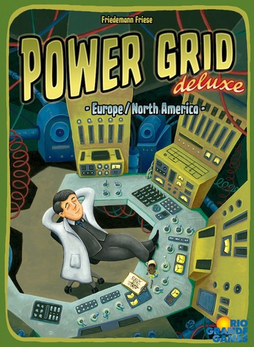
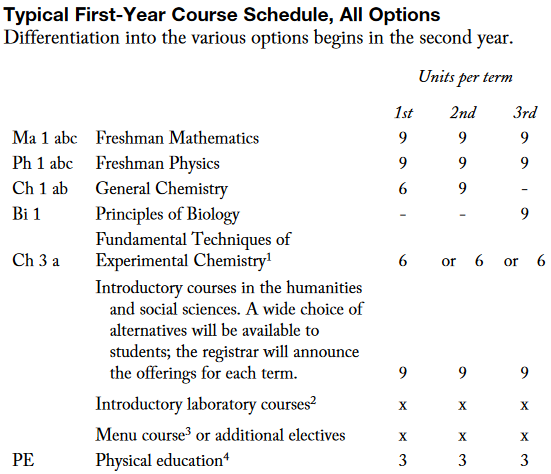

- ?, 02 4? 2019
- Blog
The Time Value of Money
Money today is worth more than money later. We don't need an equation to understand that.
Suppose you have two choices: take \(X\) dollars from me today, or \(X\) dollars from me next year. Of course you pick the former, because you can put that money in a bank account and have it pay some small interest. Or, if you are starving, you'd like to be fed today rather than in a year. Money now is worth more than money in the future.
So you like equations...
If you like equations, then maybe think about the present worth \(V\) of a promise that pays \(X\) dollars every year \(t\) until the end of time:
where \(X_t\) is \(X\) dollars and \(D_t\) is some discount rate of money for that year. If we assume a constant bank account interest rate of \(r \gt 0\), then \(D_t=\frac{1}{(1+r)^t}\). \(r\) is usually something around \(0.005\) for a bank account. Using all of this, \(V\) becomes
That result isn't very profound, but it is important to understand that \(\frac{1}{1+r} \lt 1\) and thus \(D_t \lt 1\). So \(X\) dollars promised to you in \(t\) years is worth \(D_tX \lt X\) dollars now. You'd rather have that "promised" money in your bank account now, if you could choose.
Now let's try to apply this thinking to goods other than financial instruments.
Time value of goods in a board game
My friends recently made me play the board game "Power Grid" by Friedemann Friese. In this game, one spends money on power stations, raw materials for the power stations, and contracts for supplying power to cities. One earns money for supplying a city with power. The more cities you supply, the more money you get at the end of the year. I usually think board games are stupid, but this one is pretty fun.

Power Stations
In this game, we need to bid for power stations. To help win the game, it is nice to know how much the power station is worth. How do we calculate this? Let's start with some game facts: - the power station uses raw materials to generate power - the power station supplies power to a certain number (1-7) of cities - we can only own 3 power stations at a time; if we try to exceed this we will need to throw one out
At the very least, we should consider: - the cost of raw materials on the market (uranium is more expensive than coal, until late stages in the game) - how many cities we have contracts for (if we have 15 contracts, we don't want a small station that can supply only 1 city) - what power stations we have already (if we already own 2 nuclear generators, we probably want something else since buying too much uranium drives up the price) - the expected lifetime of this power station
The last consideration is the most difficult to estimate and it is where the time value of goods comes in. If we think about the profit each generator makes per turn \(t\) as \(X\), then we can think of the present value of the generator as \(V\):
where \(D_t\) is our familiar discount rate. What's different this time is that \(D_t=0\) after the turn that we decide to throw out the station (call that turn \(T\)) because we want to buy a better one.
This means
The number \(T\) is primarily determined by how many cities the power station can generate for, and in my experience is usually around \(5\) if you're good at picking power stations. As a rule of thumb, \(T=0\) if you have 15 cities and that power station can only supply power for 2 cities.
So there is quite clearly a time value of power stations in this board game. What about the time value of other things?
The time value of knowledge and skill: course selection at Caltech as a board game
When critics attack some mathematical models, they frequently say the world is "not that simple" and "continuous, not discrete". These statements are generally true outside of modelling, but in special cases we can view the world in discrete timesteps.
There are \(3\) terms per year, and a typical total of around \(4\) years for an undergraduate degree at Caltech. Before each term \(t\), students must select courses that they will then take, - subject to a budget constraint of \(51\) "units" of coursework per turn and - a list of "graduation requirements" that must be fulfilled over all turns. - Each course has some expected payoff (whether monetary, opportunity, or enjoyment-based) which is estimated by the student using limited information from course catalog descriptions, rumours from friends, supposedly knowledgeable upperclassmen, course reviews, etc.
The final point is an undoubtedly true statement. However, I have yet to think of anyone at Caltech who views courses this way, including professors in the social sciences (who advise randomly selected first-year students).
An even more profound conclusion is that the expected payoff of a course is not only conditional on the course content, but also which year/term (turn) the student is taking it. Just as low-throughput or coal-fuelled power stations become worth less in late stages of that board game, some courses have an "expiry date" as well.
So how should we play this game to maximise our total payoff over the \(4\times 3=12\) terms? Let's first look at suggestions from the official Caltech Course Catalog:

To have an opinion on these suggestions, I first assert that courses can be grouped into 3 categories:
- Courses that will generate a concrete payoff (like skills to be used in an internship/research, or an interview)
- Courses that will generate a "fun" factor in student life (like guitar class or some purely interesting theoretical course)
- Courses that will be neither fun nor helpful within 1 year
Now let's consider the payoff generated by each of these types of courses:
- Type (1) payoffs have the strongest time dependence. This is because some skills are necessary to do work outside of classes, and being able to do the work is conditional on having taking the course. Think interviews: if a company asks you about Machine Learning and you took Discrete Math instead of Yaser's lectures, you're screwed. Alternatively, for the academically oriented, if a professor hiring summer researchers asks you about numerical techniques for PDEs and you took Chem Lab in place of a PDE course, you're also screwed. The examples can go on and on.
- Type (2) payoffs are usually constant in time, and positive. It doesn't matter which term you make ceramics or play guitar; you'll probably have the same amount of fun.
- Type (3) payoffs are constant in time, and negative. You're paying a large tuition to Caltech, you need to spend time and effort to do homework, and in exchange you get no joy and no benefit in the short term. If you are studying Physics and sucked at Chemistry in high school, then Type (3) refers to courses like Chem Lab. If you are going into industry and in CS, then CS 38 is in this category. Most of the Core is also in here.
If we want to maximise our total payoff over the 4 years, then we want to have as much Type (1) and as little Type (3) as possible, in the early game (first few years).
Why is this true? Type (1) courses will generate opportunities and experiences, which will generate further opportunities and experiences in the following year. Think: internships/research are good for getting more internships/research. Type (3) courses are just there to fulfill the graduation requirement and eat away our budget of \(51\) units.
Every unit of Type (3) course taken is a unit of Type (1) course wasted, unless there are no more Type (1) courses remaining.
Type (2) courses can preserve our sanity and should be sprinkled in if necessary, or if we run out of Type (1) to select from.
If we follow the above principle, then we should not follow the Course Catalog suggestions. What good will Swimming do when the CTO of a startup asks you about binary search trees? What good will "mitochondria is the powerhouse of the cell" do when you are characterising your cold plasma in a vacuum chamber? What good will your skill in pouring H2SO4 into a cylinder do when you are chipping at a keyboard in your computational lab? Before all of this, we can ask, would you even have those opportunities if you were wasting your time?
So, that means if you are a CS major, push Biology, Chem Lab, PE, humanities, and as many other Type (3) courses as you can to the final year. I somehow still believe that Physics is good for mathematical intuition and Mathematica practice, so it is not entirely useless.
But isn't it sometimes good to have general, cross-disciplinary knowledge for inspiration?
Are you going to bet your future on a rare event?
We also never factor in, nor do we often find, synergies. - Warren Buffett, 2017 Letter to Investors
The Core (general education) is designed to generate inspiration and overall scientific competence in society, but this will probably not happen within the 4 years of the board game. Type (3) courses have negative payoff in the short term, but they might be positive in 10 years.
How do we determine what course is Type (1), and what is Type (3)?
The usual sources of information to calculate the expectation value of course payoffs are: - catalog descriptions and course syllabi - rumours from friends - supposedly knowledgeable upperclassmen who took the course - course reviews (TQFR reports)
Catalog descriptions and course reviews are pretty good, but in my experience there are some better sources: - attending the first day of a class that has high uncertainty in expected payoff to properly assess it. - There is no penalty for dropping and adding in the first week. - very recent, successful alumni in fields similar to mine - Recent, because course information becomes outdated quickly, and strong nostalgia tends to bring out intellectual masochism - Successful, because I too would like to be successful - Fields similar to mine, because everything else is irrelevant - limiting the "knowledgeable" upperclassmen and friends to those with career paths aligned with my own - If I could re-live my university experience and a friend in theoretical CS tells me "analytical multivariable calculus is very important for you and will also be super fun", I will spit at them in the face.